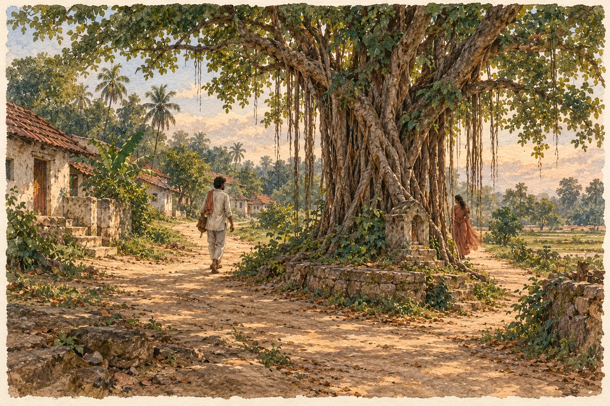
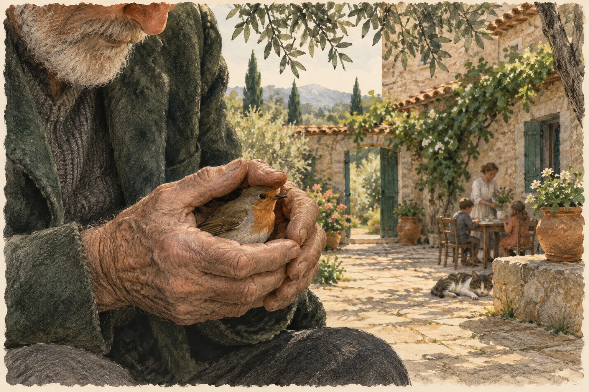
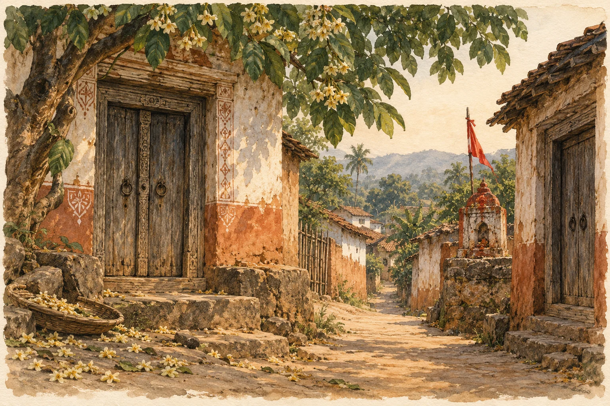
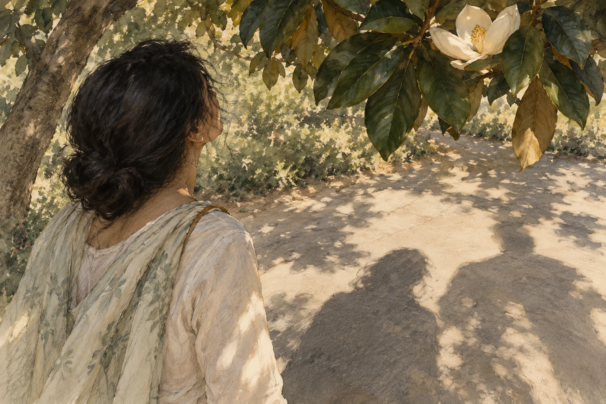
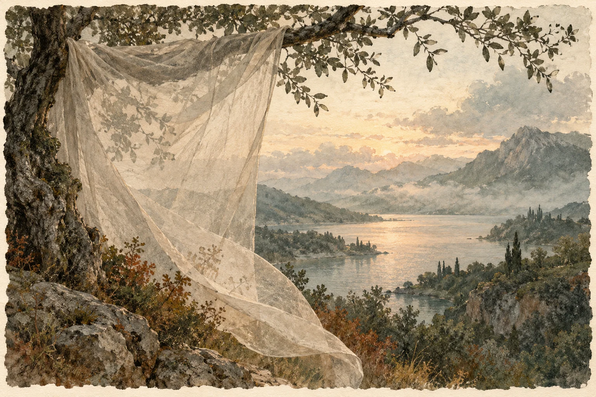
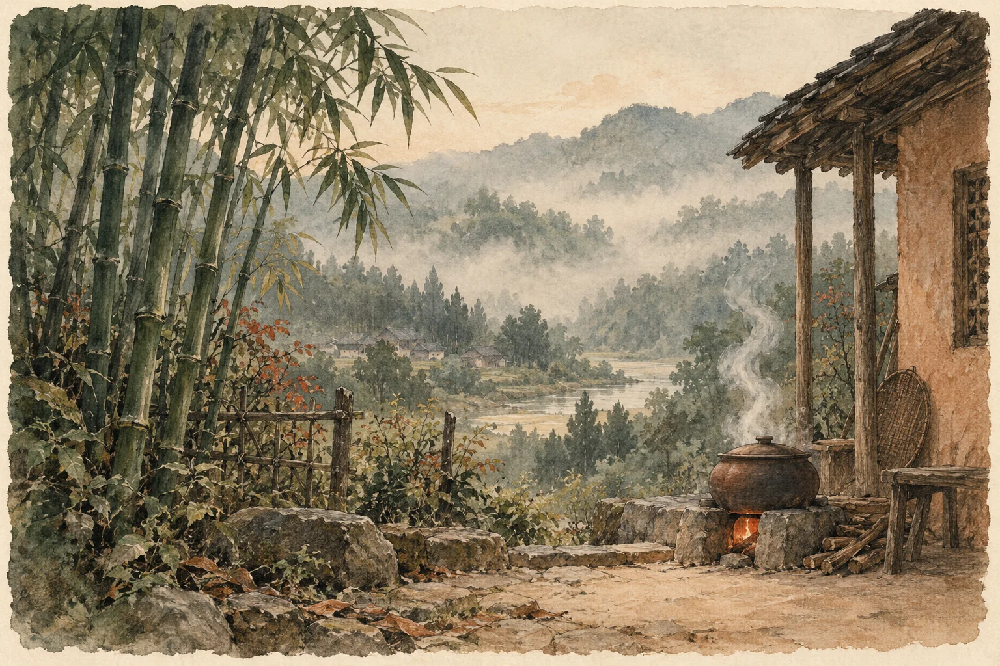
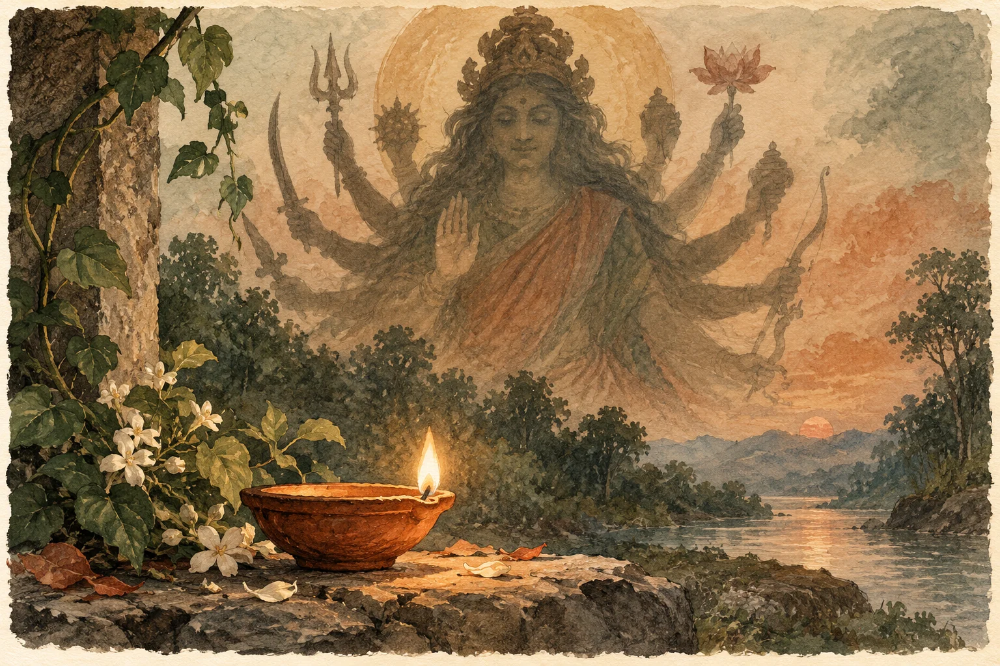

କବିଙ୍କ ଜଗତ · ଓଡ଼ିଆ ଓ ଇଂରାଜୀ
ଶକୁନ୍ତଳା ଗୁପ୍ତା
ମନ ଭିତରେ ଗାଁଟିଏ।
ସୀମା ଡେଇଁ ଯାଉଥିବା ସ୍ୱରଟିଏ।

କବି ପରିଚୟ
ଜୀବନ ଓ ସାହିତ୍ୟ
ଶକୁନ୍ତଳା ଗୁପ୍ତା ଓଡ଼ିଆ ଓ ଇଂରାଜୀରେ କବିତା ଲେଖନ୍ତି। ତାଙ୍କ କବିତାରେ ସ୍ମୃତିର ସ୍ଥାନ, ବିରହ, ପ୍ରକୃତି ଓ ଅନ୍ତର୍ଜଗତର ଅନୁଭବ ରହିଛି।
ତାଙ୍କ ଲେଖା କବିତା ଲାଇଭ୍ ଓ ତୋଷାଳି କବିତା ସଂକଳନ ୨୦୨୬ରେ ପ୍ରକାଶିତ ହୋଇଛି। ସେ ଅକ୍ଷର ଓ ମାଟିଲଗ୍ନାରେ ପ୍ରକାଶିତ କବିତାର ଛବି ମଧ୍ୟ ସେୟାର କରିଛନ୍ତି। ସେ SAPNEର ସାହିତ୍ୟ କାର୍ଯ୍ୟକ୍ରମ ଓ ତୋଷାଳି ସାହିତ୍ୟ ଉତ୍ସବରେ ଅଂଶଗ୍ରହଣ କରିଛନ୍ତି।
ସମସ୍ତ କବିତା
ଗୋଟିଏ ତାଲିକାରେ ସମସ୍ତ କବିତା
ମୂଳ କବିତା ଓ ପ୍ରକାଶନ ଲିଙ୍କ୍ ଏକାଠି। ପତ୍ରିକାର କବିତା ତାହାର ମୂଳ ଛବିରେ ପଢ଼ନ୍ତୁ।
01
ମେଳଣ (ମିଳନ)
କବିତା ପଢ଼ନ୍ତୁ

ବହିଯାଉଚି ଆଷାଢ଼
କବିତା ପଢ଼ନ୍ତୁ

ମଙ୍ଗଲି ଓ ୭୫ ଦିନର ଦଶହରା
କବିତା ପଢ଼ନ୍ତୁ

କିଛି ପୁରୁଷ
କବିତା ପଢ଼ନ୍ତୁ

ତଅପୋଇ ଓ ବୁଢ଼ା ବଳଙ୍ଗ
କବିତା ପଢ଼ନ୍ତୁ

ଅବିର ଖେଳା ରେ..
କବିତା ପଢ଼ନ୍ତୁ

ଫାଳେ ଜହ୍ନ
କବିତା ପଢ଼ନ୍ତୁ

ହାପି ଫାଦର୍ସ ଡେ
କବିତା ପଢ଼ନ୍ତୁ

ଯେତେ ପ୍ରେମ୍, ସେତେ ପାପ୍..!?
କବିତା ପଢ଼ନ୍ତୁ

ନିରଙ୍ଗ କରେ ରାହାସ
କବିତା ପଢ଼ନ୍ତୁ

ତୁମ ଛବି
କବିତା ପଢ଼ନ୍ତୁ

ତୁ ଲୁଚିଯାଉ ଯେବେ ଯେବେ
କବିତା ପଢ଼ନ୍ତୁ

କୋଟପାଡ଼
କବିତା ପଢ଼ନ୍ତୁ

Cast Away
କବିତା ପଢ଼ନ୍ତୁ

ମୋ ଭିତରେ ଗାଆଁଟିଏ
ମୂଳ ପ୍ରକାଶନ ପଢ଼ନ୍ତୁ ↗

I don’t find myself
ମୂଳ ପ୍ରକାଶନ ପଢ଼ନ୍ତୁ ↗

ଆବରଣ
ମୂଳ ପ୍ରକାଶନ ପଢ଼ନ୍ତୁ ↗

ଅକ୍ଷର · କବିତା
ମୂଳ ପ୍ରକାଶନ ପଢ଼ନ୍ତୁ ↗

ମାଟିଲଗ୍ନା · କବିତା
ମୂଳ ପ୍ରକାଶନ ପଢ଼ନ୍ତୁ ↗
କବିତାଗୁଡ଼ିକ ମୂଳ ଭାଷାରେ ରହିଛି। ଭାଷା ବଦଳାଇଲେ ୱେବ୍ସାଇଟ୍ର ପରିଚୟ ଓ ନିର୍ଦ୍ଦେଶ ବଦଳିବ।
ସୂତ୍ର ଓ ପ୍ରକାଶନ
କବିତା ଲାଇଭ୍ରେ କବି ପରିଚୟ, SAPNE ଉତ୍ସବର ବିବରଣୀ ଓ ତୋଷାଳି କାର୍ଯ୍ୟସୂଚୀ ପଢ଼ନ୍ତୁ।
Kabita Live · SAPNE · Toshali